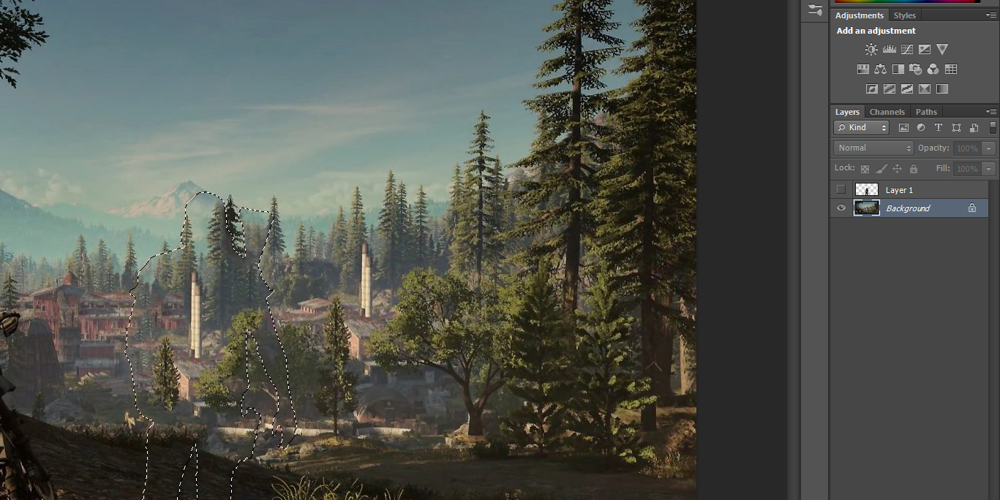
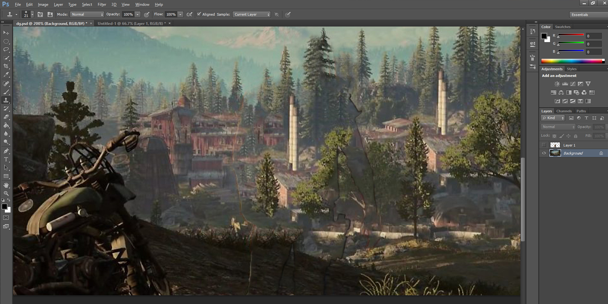
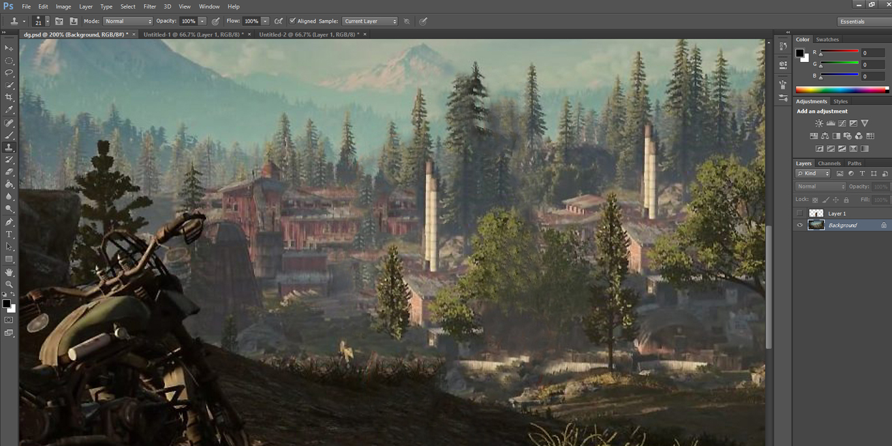
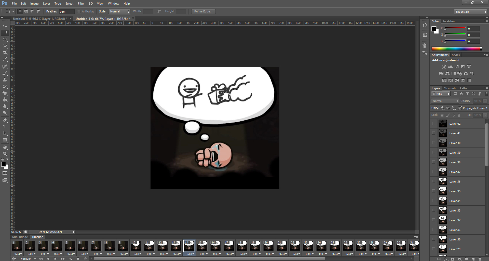

Adobe Portfolio
Here is a selection of my work using various Adobe softwares. Feel free to scroll down or click one of the headings below for specific Adobe work.
Adobe Photoshop
Below are some examples of my Photoshop work in creating the Google Web Designer Banner Ads.
Days Gone
For the Days Gone banners shown in the Google Web Designer section I used Photoshop to separate the foreground from the background.
To do this I used the pen tool to carefully outline the character, then pasted it onto a new layer.
Then whilst selecting the correct layers, I used the fill tool for the background, selecting content aware. This however, left an outline of where the character was, so I worked back into the scene with the clone stamp tool to avoid any imperfections.
 I repeated this for the motorbike. Seperate to the Google Web Designer version, I also made a video animation using the timeline in Photoshop.
Binding of Isaac
For the Binding of Isaac banner I used OBS to record a cutscene I wanted to turn into an animated GIF. I saved the recording as an MP4, imported into Adobe Premiere, cropped and trimmed the clip and then exported as an MP4.
Finally I imported the video frames as layers in Photoshop. Made adjustments to the frames per second, then saved for web as a GIF.
Digital Painting
Below is an example of my digital painting work using Adobe Photoshop and a Huion drawing tablet.

Adobe Premiere
Another hobby of mine has been to make videos, here are some examples of some different works.
Dismaland Video
When I went to Dismaland I filmed the experience using my Nikon D3100 using an f1.8 lens. I have edited these clips to match the pacing of the music used, which is Burial's Night bus and Burial's In Mcdonalds.
True Detective Trailer
This is my take on a True Detective trailer/fan video made to Tim Hecker's Sketch 2. My focus was to capture the gritty mood of the tv series and involved a lot of video/audio layering, trimming, cropping and slow motion effects to place emphasis on particular moments.
Speed Painting
Final Image can be found in my illustration work. Here is a painting I filmed the process of using my Nikon D3100 and have sped up using Adobe Premiere. I made this video with the intention of promoting my art and my music. All of the music pkaying in the background in music from My Soundcloud and each individual track has a timing marker in the YouTube description allowing people to go to the exact piece of music on Soundcloud.